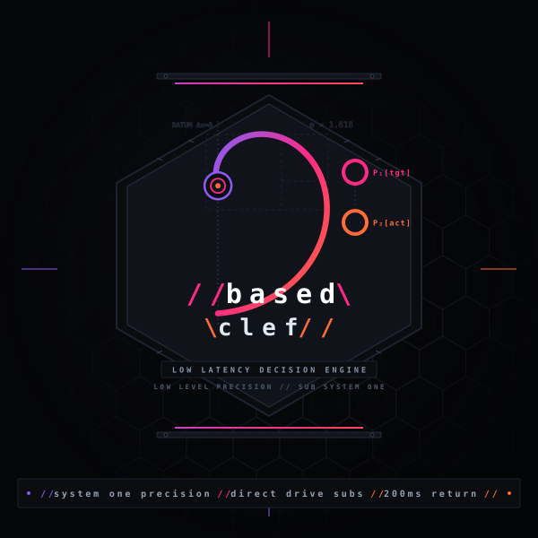

Intent → Blueprint Compiler
Auto-extracts target URLs and parameters from natural prompts or -> shorthand, producing an editable stage sequence you can preview, step through, or export as a reusable .playbook.json.
Based Clef compiles natural language goals and -> pipelines into editable Action Sequence Blueprints,
then drives browsers and Linux desktops with calibrated Cloudflare Clef probability gates and zero-leak secret isolation.

Auto-extracts target URLs and parameters from natural prompts or -> shorthand, producing an editable stage sequence you can preview, step through, or export as a reusable .playbook.json.
Built-in local command center (bclef studio) featuring a live annotated viewport, clickable DOM bounding boxes, real-time P1–P4 probability bars, and inline stage editing.
Single forward pass via @cf/cloudflare/clef-flash evaluates target, action, completion, and sensitivity simultaneously — escalating to LLMs only when confidence drops below 0.70.
Passwords and tokens stay strictly in local RAM, never enter LLM or Clef prompts, mask as *** in DOM snapshots, and persist to 0600 storage only after task completion.
Drives Chrome/Chromium via Playwright with #ff33cc target outlines and native X11 apps via AT-SPI accessibility inspection plus Tesseract OCR fallback.
Plug directly into Claude Desktop, Cursor, or Antigravity via bclef mcp, or script background automation over agent.sock with bclef ipc.